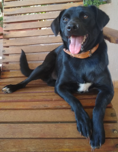
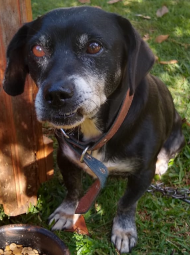

Me chamo Fernando Pellens Galante, tenho 17 anos, nasci em 3 de abril de 2006 em Francisco Beltrão, morei lá até os 4 anos de idade, quando vim para Concórdia do Oeste, um distrito de Toledo, e morei com minha avó por um ano, enquanto construíam a casa que vivo desde então.
Eu sou uma pessoa bem tímida, geralmente não consigo manter contato visual ou olhar no rosto de outras pessoas, sem contar que tenho bastante dificuldade de manter o foco, mas mesmo assim vou seguindo a vida. Também não gosto de tirar fotos, tanto que não uso minhas fotos como foto de perfil em minhas redes sociais.
Fiz um curso de língua inglesa até final do ano passado, quando recebi um certificado de Cambridge, uma universidade da Inglaterra.
Atualmente, estou cursando TSI (Tecnologia em Sistemas para Internet) na UTFPR, não trabalho nem nunca trabalhei, mas estou procurando um estágio.
Os 3 anos do ensino médio eu fiz no Premen (Colégio Estadual Presidente Castelo Branco), infelizmente o 1º ano e o 2º ano foram praticamente inteiros online. Já o ensino fundamental eu completei em uma escola que fica bem perto de onde moro, Escola Municipal Duque de Caxias (1º ano ao 5º ano) e Escola Estadual do Campo de Nova Concórdia (6º ano ao 9º ano), são duas escolas mas dividem o mesmo prédio.
Meu tipo favorito de música é eletrônica, em geral não ouço músicas nacionais.
Sobre viagens, me limito a praias, nunca viajei pra fora do Brasil.
Gosto de ver filmes, mas o que eu mais gostei foi Vingadores Ultimato, amo grande parte dos filmes da Marvel, mas Ultimato é simplesmente único. Minha série preferida é Teen Wolf, é uma série de lobisomens que conta a história de um grupo de adolescentes lutando contra as bizarras criaturas sobrenaturais na cidade de Beacon Hills.
Uma das coisas que mais gosto de fazer no meu tempo livre é jogar Minecraft, desde 2013, eu jogava no Xbox, mas jogava sozinho, depois de um tempo comecei a jogar no computador com meus amigos e jogo até hoje.
Outra coisa que adoro é jogar truco, é um jogo que eu me dou bem e jogo quando possível, normalmente nos fins de semana.
Churrasco no domingão, quem não gosta, não é? Ainda com um truquinho depois do almoço fica maravilhoso!
Eu sempre quis ter um gato, porém como minha mãe faz bolos, não dá para ter um gato que fica soltando pelos toda hora. Mas em junho de 2014 adotamos a Bibi e ano passado ela pariu o Bob, que fez 1 aninho nesse domingo dia das mães (14/05). Infelizmente não sabemos do pai dele, ele deve ter entrado, feito e saído sem ninguém ver.

